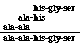

Large Molecules Problem Set
Problem 11: Sequence of a polypeptide
Tutorial to help answer the question
A polypeptide 5 amino acids long is split into various smaller fragments and the amino acid sequences of some of the fragments are determined. The identified fragments include: his-gly-ser, ala-his, and ala-ala. Predict the primary sequence of the polypeptide.
Tutorial
Amino acids of a polypeptide
|
The amino acids of a polypeptide are linked together like the links of a chain. A polypeptide of 5 amino acids is analogous to a chain with five links. It has two end amino acids, and three internal links. Breaking our chain into smaller pieces is similar to cutting links of a chain and producing smaller chains. The amino acids that are adjacent to each other in the smaller fragments were also adjacent in the larger chain.
|
Amino acid composition
A good starting point for a problem like this is to try to determine the amino acid composition of the unknown. What are the five amino acids that are combined to form the peptide? If we examine the sequences of the three fragments, we see that:
One fragment has the sequence his-gly-ser, so each
of these three amino acids is present.
Another fragment has the sequence ala-ala, meaning
that there are 2 alanines present.
From these two fragments alone, we can unambiguously define the amino acid composition of the 5 amino acid long peptide as (his-gly-ser, and ala-ala). Note that the two other combination of two fragments (either ala-ala and ala-his or ala-his and his-gly-ser would only have been sufficient to define 3 or 4 of the 5 amino acids.
|
Overlapping pieces
|
From the two fragments used to determine amino acid composition, you can also deduce that the sequence must be either his-gly-ser-ala-ala or ala-ala-his-gly-ser. The overlapping fragment of ala-his is used to distinguish these two possibilities.
|
| 
|
|
The final sequence of the polypeptide with 5 amino acids
is ala-ala-his-gly-ser.
|


 

The Biology Project
Department of Biochemistry and Molecular Biophysics
The University of Arizona
Revised: October 2004
Contact the Development
Team
http://biology.arizona.edu
All contents copyright © 1996-2003.
All rights reserved.
|